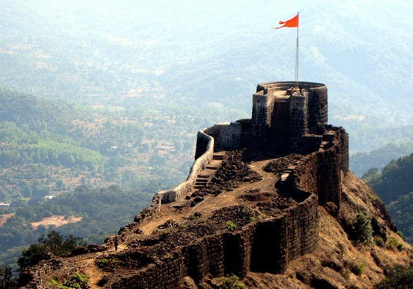

Key Contribution:
Shivaji Maharaj founded the Maratha Empire in 1674, creating a powerful and independent kingdom that
challenged the dominance of the Mughal Empire in India. His establishment of the empire marked a significant
shift in the regional power dynamics of the time.

The Early Years and Shivaji's Vision:
Origins:The Marathas were primarily a Marathi-speaking warrior group from the present-day state of
Maharashtra. They had been under the rule of various Islamic dynasties for centuries.
Shivaji's Rise:Shivaji, born into a Maratha noble family, recognized the potential of his people and the
vulnerability of the ruling powers. He embarked on a mission to establish an independent Maratha kingdom.
Guerrilla Tactics:Shivaji employed innovative guerrilla tactics, combining military prowess with
political acumen. He successfully captured several forts from the Bijapur Sultanate and the Mughals.
Administrative Reforms:Shivaji was not just a warrior; he was also a skilled administrator. He
established a well-organized administration, efficient revenue collection system, and a strong naval force.
Key Factors in the Empire's Rise:
1.Strong Leadership:Shivaji and subsequent Maratha leaders possessed exceptional military and
administrative abilities.
2.Guerrilla Warfare:The Marathas' mastery of guerrilla tactics enabled them to defeat larger armies.
3.Naval Power:A strong naval force helped protect the Maratha coastline and expand their influence.
4.Administrative Efficiency:A well-structured administration ensured the smooth functioning of the
empire.
5.Unity and Nationalism:A sense of Maratha identity and pride fueled the people's support for the
empire.